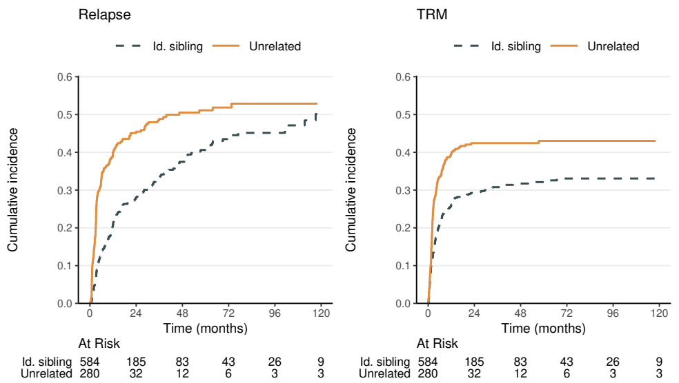
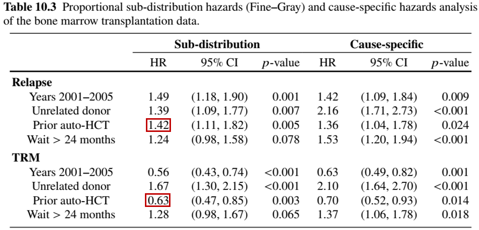

Applied Survival Analysis
Chapter 10 - Competing/Semi-Competing Risks
Department of Biostatistics & Medical Informatics
University of Wisconsin-Madison
Outline
Cause-specific hazard and cumulative incidence
Non- and semi-parametric methods
Analysis of bone marrow transplantation study
Semi-competing risks and examples
\[\newcommand{\d}{{\rm d}}\] \[\newcommand{\T}{{\rm T}}\] \[\newcommand{\dd}{{\rm d}}\] \[\newcommand{\cc}{{\rm c}}\] \[\newcommand{\pr}{{\rm pr}}\] \[\newcommand{\var}{{\rm var}}\] \[\newcommand{\se}{{\rm se}}\] \[\newcommand{\indep}{\perp \!\!\! \perp}\] \[\newcommand{\Pn}{n^{-1}\sum_{i=1}^n}\]
Basic Quantities
Definition and Examples
- Competing risks
- Definition: multiple types of failures, occurrence of one precludes others
- Multiple latent risks competing with each other for first occurrence
- Examples: different causes of death
- Definition: multiple types of failures, occurrence of one precludes others
- Defining feature
- One failure per subject
- Less info than multivariate failure times
- Implications for analysis and interpretation
Outcome Data & Identifiability
- Target of inference: \((T, \Delta)\)
- \(T\): time to failure
- \(\Delta \in \{1, \ldots, K\}\): type/cause of failure (categorical)
- Multivariate perspective
- A conceptual framework \[\begin{equation}\label{eq:cmpr:mult}
T=\min(T_1,\ldots, T_K) \hspace{1mm}\mbox{ and } \hspace{1mm}\Delta=\arg\min_{k=1,\ldots, K} T_k
\end{equation}\]
- \(T_k\): time to \(k\)th latent risk \((k=1,\ldots, K)\) in absence of other risks
- Competing risks \(=\) partially observed multivariate failure times
- Identifiability: net distribution of latent \(T_k\) not recognizable from \((T, \Delta)\)
- unless under unrealistic assumption of mutual independence of the \(T_k\)
- A conceptual framework \[\begin{equation}\label{eq:cmpr:mult}
T=\min(T_1,\ldots, T_K) \hspace{1mm}\mbox{ and } \hspace{1mm}\Delta=\arg\min_{k=1,\ldots, K} T_k
\end{equation}\]
Two Approaches
- Two ways to characterize \((T, \Delta)\)
- Cause-specific hazard
- Cumulative incidence (Sub-distribution)
- Cause-specific hazard (CSH) \[\begin{equation}\label{eq:cmpr:cs_hazard}
\dd\Lambda_k^\cc(t)=\pr(t\leq T<t+\dd t, \Delta=k\mid T\geq t)
\end{equation}\]
- Interpretation: instantaneous incidence of \(k\)th risk given overall “survival”
- Example: \(\dd\Lambda_1^\cc(t)=\) incidence rate for CV death among survivors at \(t\)
- \(k =1\): CV death; \(k =2\): other causes of death
- Overall hazard: \(\dd\Lambda(t)=\pr(t\leq T<t+\dd t \mid T\geq t) = \sum_{k=1}^K \dd\Lambda_k^\cc(t)\)
Cause-Specific Hazard
- Limitations
- The cumulative CSH \(\Lambda_k^\cc(t)\) not a meaningful quantity
- \(\exp\{-\Lambda_k^\cc(t)\}\) not a survival function of any kind
- Correspondence with “net hazard”
- Under (unrealistic) mutual independence of the latent \(T_k\)
- Hazard of \(T_k\) identifiable and equal to \(\Lambda_k^\cc(t)\)
- Not recommended
Cumulative Incidence
- Cumulative incidence function (CIF) \[
F_k(t)=\pr(T\leq t, \Delta=k)
\]
- Interpretation: probability of failure from \(k\)th risk in presence of other risks
- Marginal quantity, easy to interpret (a real-world probability)
- \(F(t)=\pr(T\leq t) = \sum_{k=1}^K F_k(t)\) (sub-distribution functions)
- Relationship
- CSH in terms of CIF (for a particular risk, no one-to-one correspondence) \[\begin{equation}\label{eq:cmpr:correspond} \dd\Lambda_k^\cc(t)=\frac{\dd F_k(t)}{1-\sum_{l=1}^K F_l(t-)} \end{equation}\]
CSH vs CIF
- Example: effect on CSH may not align with CIF
- Treatment: \(\Lambda_1^\cc(t)=\Lambda_2^\cc(t)=3t\)
- Control: \(\Lambda_1^\cc(t)=2t\) and \(\Lambda_2^\cc(t)=t\)
Comparison of Functions
- CSH vs net hazard vs CIF

Methods for Competing Risks
Observed Data
- A random \(n\)-sample \[(X_i, \delta_i, Z_i), \,\,\, i=1,\ldots, n\]
- \(X=T\wedge C\)
- \(\delta=\Delta I(T\leq C)\) (0: censored; \(k\): observed \(k\)th risk, \(k=1,\ldots, K\))
- \(C\): independent censoring time
- \(Z\): covariates
- \(N_{ki}(t)=I(X_i\leq t, \delta_i=k)\): Observed counting process for \(k\)th risk
Cause-Specific Hazard Models (I)
- Proportional cause-specific hazards \[\begin{equation}\label{eq:cmpr:ph_csh}
\pr(t\leq T<t+\dd t, \Delta=k\mid T\geq t, Z)=\exp(\beta_k^\T Z)\dd\Lambda_{k0}(t)
\end{equation}\]
- A model on “survivors” (those who have not failed from any risk)
- \(\beta_k\): log-hazard ratios for \(k\)th risk in survivors
- Estimation
- Partial likelihood score for \(k\)th risk \[
U_{nk}(\beta_k)=\Pn\int_0^\infty\left\{Z_i-\frac{\sum_{j=1}^n I(X_j\geq t)Z_j\exp(\beta_k^\T Z_j)}{\sum_{j=1}^n I(X_j\geq t)\exp(\beta_k^\T Z_j)}\right\}\dd N_{ki}(t)
\]
- Essentially treating non-\(k\) risks as censoring
- Easy to implement in
survival::coxph()(status == k)
- Partial likelihood score for \(k\)th risk \[
U_{nk}(\beta_k)=\Pn\int_0^\infty\left\{Z_i-\frac{\sum_{j=1}^n I(X_j\geq t)Z_j\exp(\beta_k^\T Z_j)}{\sum_{j=1}^n I(X_j\geq t)\exp(\beta_k^\T Z_j)}\right\}\dd N_{ki}(t)
\]
Cause-Specific Hazard Models (II)
- Under (unrealistic) independence of the latent \(T_k\)
- Proportional cause-specific hazards \(\Longleftrightarrow\) proportional net hazards
- Frailty to relax independence
- Not recommended
- Non-identifiability
- Non-interpretability
- Log-rank test
- Risk-specific log-rank statisic with other risks treated as censoring
- “Kaplan-Meier” doesn’t work \(\to\) estimand \(\exp\{-\Lambda_k^\cc(t)\}\) is non-quantity
- Competing-risks equivalent of KM is Gray (1988) estimator of \(F_k(t)\)
CIF: Nonparametric Estimation
Decomposition of \(F_k(t)\) \[\begin{equation*} \dd F_k(t)=S(t-)\dd\Lambda_k^\cc(t) \end{equation*}\]
\(S(t-)=\pr(T\geq t)\): By KM estimator \(\hat S(t-)\) for overall failure
\(\dd\Lambda_k^\cc(t)\): By Nelsen-Aalen estimator (non-\(k\) risks as censoring) \[ \dd\hat\Lambda_k^\cc(t)=\frac{\sum_{i=1}^n\dd N_{ki}(t)}{\sum_{i=1}^n I(X_i\geq t)} \]
- Gray estimator \[\begin{equation*} \hat F_k(t)=\int_0^t \hat S(u-)\dd\hat \Lambda_k^\cc(u) \end{equation*}\]
CIF: Sub-Distribution Hazard
- Sub-distribution hazard (SDH) \[\begin{equation}\label{eq:cmpr:sdh}
\dd\Lambda_k(t)=\pr(t\leq T_k^*<t+\dd t\mid T_k^*\geq t)
\end{equation}\]
- Time to \(k\)th risk in presence of other risks \[
T_k^*=T\cdot I(\Delta=k)+\infty\cdot I(\Delta\neq k)
\]
- \(F_k(t)=\pr(T_k^*\leq t)\)
- Interpretation: incidence of \(k\)th risk given not failing from it
- Easier to work with hazard-like functions (unbounded)
- Correspondence with CIF \[\begin{equation}\label{eq:cmpr:subdist} F_k(t)=1-\exp\{-\Lambda_k(t)\} \end{equation}\]
- Model/test on SDH \(\Longleftrightarrow\) Model/test on CIF
- Time to \(k\)th risk in presence of other risks \[
T_k^*=T\cdot I(\Delta=k)+\infty\cdot I(\Delta\neq k)
\]
CIF: Gray’s Test
- Discrete version (\(k\)th risk) \[ \dd\Lambda_k(t)=\frac{\dd F_k(t)}{1-F_k(t-)} \]
- Log-rank-type test
- Testing \(H_0: F_{k1}(t)=F_{k0}(t)\) \[\begin{equation}\label{eq:cmpr:gray_tests} \int_0^\infty W_k(t)\big\{\dd\hat\Lambda_{k1}(t)-\dd\hat\Lambda_{k0}(t)\big\} \end{equation}\]
- \(\hat\Lambda_{ka}(t)\): Gray’s CIF plug-in estimator for SDH in group \(a\) \((a=1, 0)\)
- \(W_k(t)\): Weight function
- Extensions: multi-group, stratification, etc.
CIF: Fine-Gray Regression
- Proportional sub-distribution hazards (Fine and Gray, 1999) \[\begin{equation}\label{eq:cmpr:fg}
\pr(t\leq T_k^*<t+\dd t\mid T_k^*\geq t, Z)=\exp(\beta_k^\T Z)\dd\Lambda_{k0}(t)
\end{equation}\]
- \(\beta_k\): log-hazard ratios for \(k\)th risk in entire population (under other risks)
- Estimation and inference: partial-likelihood score with IPCW to address dependent censoring by other risks
- Target populations
- Cause-specific hazard: survivors
- Sub-distribution hazard: all, including those who have failed from other causes
Software: cmprk::cuminc()
- Basic syntax for Gray’s estimator & test
- Input
(ftime, fstatus): \((X, \delta)\)group: group variable (optional);strata: strata variable (optional)rho: \(\rho\) in weight \(W_k(t)=\{1 - \hat F_k(t)\}^\rho\) (HF \(G^\rho\) family)
- Output: a list
obj$Tests: tests results on each riskobj$"a k": CIF estimates for \(k\)th risk in group \(a\)time: \(t\);est: \(\hat F_k(t)\);var: \(\hat\var\{\hat F_k(t)\}\)
Software: cmprk::crr() (I)
- Basic syntax for Fine-Gray model
- Input
(ftime, fstatus): \((X, \delta)\);cov1: \(Z\)failcode = k: models \(k\)th risk
- Output: a list of class
crrobj$coef: \(\hat\beta_k\);obj$var: \(\hat\var(\hat\beta_k)\)obj$uftime: \(t\);obj$bfitj: \(\dd\hat\Lambda_{k0}(t)\)
Software: cmprk::crr() (II)
- Prediction of CIF by Fine-Gray model
obj: acrrobject for fit modelz: new covariate data
# --- Method 1: use predict.crr()
obj_pred <- predict(obj, z)
# --- Method 2: manual calculation
beta <- obj$coef
Lambda <- cumsum(obj$bfitj)
time <- obj$uftime
## Calculate CIF based on FG model
cif <- 1- exp(- exp(sum(beta * z)) * Lambda)
## Same as obj_pred from Method 1
obj_pred <- cbind(time, cif)Software: tidycmprk Package (I)
- Tidy competing risks analysis
- Wraps around
cmprkfunctions - Formula-based interface \(+\) Tidy output
- Integrated with
ggsurvfitandgtsummary
- Wraps around
- Main functions
- Nonparametric analysis
tidycmprsk::cuminc(): model fittingtidycmprsk::tbl_cuminc(): tabulation of CIF estimatesggsurvfit::ggcuminc(): plotting of CIF estimates
- Fine-Gray regression
tidycmprsk::crr(): model fittinggtsummary::tbl_regression(): regression table
- Nonparametric analysis
Software: tidycmprk Package (II)
- Sample code
# Compute and test on cumulative incidence function (CIF) -------------------
obj_cif <- tidycmprsk::cuminc(Surv(time, status) ~ group, data = df)
# Tabulate CIF estimates with 95% CI at specific times
tbl_surv <- tidycmprsk::tbl_cuminc(
x = obj_cif, # Provide fitted object
times = seq(12, 120, by = 36), # Time points for CIF
outcomes = c("1", "2"), # Specify risks to include
)
# Create group-specific CIF plot
ggcuminc(obj_cif, outcome = c("1", "2")) # Specify risks to include
# Fine-Gray regression for risk "k" -----------------------------------------
obj_fg <- tidycmprsk::crr(Surv(time, status) ~ covariates,
data = df, failcode = "k")
# Tabulate regression results
tbl <- tbl_regression(obj_fg, exponentiate = TRUE)Bone Marrow Transplant Study
Study Information
- Population
- 864 multiple-myeloma patients undergoing allo-HCT cell transplantation
- Endpoints: time from surgery to
- Treatment-related mortality (TRM; death in remission)
- Relapse of leukemia
- Risk factors
- Cohort indicator (years 1995–2000 or 2001–2005)
- Type of donor (unrelated or HLA-identical sibling)
- History of a prior transplant
- Time from diagnosis to transplantation (<24 months, or ≥ 24 months)
Study Data
CIF by Donor Type (I)
- Estimation/testing by donor type
obj_cif <- tidycmprsk::cuminc(Surv(time, status) ~ donor, data = df)
obj_cif # Print results
#> ...
#> • Tests
#> outcome statistic df p.value
#> Relapse 17.3 1.00 <0.001
#> TRM 12.3 1.00 <0.001
# Summarize CIF estimates at specific times
tbl_surv <- tbl_cuminc(
x = obj_cif, # Provide the fitted object
times = seq(12, 120, by = 36), # Time points for CIF
outcomes = c("Relapse", "TRM"), # Specify risks to include
label_header = "{time} months" # Column label format
)
tbl_survCIF by Donor Type (II)
- Table created by
tbl_cuminc()

CIF by Donor Type (III)

Regression Analysis
- Semiparametric regression
- Proportional cause-specific hazard
- Proportional sub-distribution hazard (FG)
# Change k
k <- 1
#--- proportional cause-specific hazards -----------------------------
obj.cs <- coxph(Surv(time, status == k) ~ cohort + donor + hist + wait,
data = cibmtr)
#--- Fine and Gray --------------------------------------------------
obj.fg <- crr(cibmtr$time, cibmtr$status, cibmtr[, 3:6], failcode = k)Regression Results
- Differential effects of prior surgery
- Relapse: increases risk by \(42\%\)
- TRM: decreases risk by \(1-0.63 = 37\%\) 
Semi-Competing Risks
Definition and Examples
- Semi-competing risks
- Terminal event (competing): death
- Non-terminal events (non-competing): hospitalization, relapse, etc.
- Examples
- Death + relapse of cancer (German breast cancer study)
- Death terminates nonfatal event but not vice versa
- Methods
- Marginal: cumulative incidence/frequency
- Frailty (Ch. 8); Multistate (Ch. 12); Composite (Ch. 13)
Data and Identifiability
- Target of inference: \((T, D)\)
- \(T\): time to nonfatal event
- \(D\): time to death
- Joint distribution \[H(s, t)=\pr(D>s, T>t)\]
- Identifiable region: \(\{(s, t):0\leq t\leq s<\infty\}\)
- Possible nonfatal \(\to\) death, not vice versa

Bivariate Analysis
- Marginal models
- Death: univariate event (KM, log-rank, Cox)
- Nonfatal event
- Cause-specific risk (treating death as censoring)
- cumulative incidence (Gray, FG)
Bivariate Analysis - GBC Example (I)
- Data
- Analysis
- Death (subset to
status != 1)- Standard Cox:
coxph(Surv(time, status == 2) ~ covariates)
- Standard Cox:
- Relapse (subset to first row for each
id)- Cause-specific hazard:
coxph(Surv(time, status == 1) ~ covariates) - Sub-distribution hazard:
tidycmprk::crr(Surv(time, status) ~ covariates, failcode = "1")
- Cause-specific hazard:
- Death (subset to
Bivariate Analysis - GBC Example (II)
- Regression results
- Relapse: cause-specific \(\approx\) sub-distribution—few deaths (21) before relapse
- Age effect: driven by relapse
Recurrent Events
- Outcome data: \(\{N^*(\cdot), D\}\)
- \(N^*(t)\): number of recurrent events in presence of death
- Repeated tumor occurrences/hospitalizations before death (\(\dd N^*(t)\equiv 0\) for \(t>D\))
- Treating \(D\) as censoring (AG/LWYY) \(\to\) cause-specific event rate \[E\{\dd N^*(t)\mid D\geq t\}\]
- Incidence rate in survivors
- \(N^*(t)\): number of recurrent events in presence of death
- Cumulative frequency
- Mean function in overall population, dead or alive \[ \mu(t)=E\{N^*(t)\} \]
- Extension of cumulative incidence
Marginal Approaches
- Methods for cumulative frequency
- Gray-type nonparametric estimator/test (Ghosh and Lin, 2000)
- Proportional CF model (Fine-Gray-type) (Ghosh and Lin, 2002) \[\begin{equation}\label{eq:cmpr:pcf} E\{N^*(t)\mid Z\}=\exp(\beta^\T Z)\mu_0(t) \end{equation}\]
- Higher death rate can reduce CF
- Joint analysis with mortality
- Ghosh-Lin for recurrent events \(+\) Cox/log-rank for death
- \(\chi^2\) test with 2 d.f.
- Alternative: shared-frailty models
Software: rccf2::rccf()
- Two-sample estimation/testing of CF
- Input
id: subject ID;trt: binary treatment grouptime: event time;status: event status (1: nonfatal; 2: death; 0: censoring)
- Output
obj$u1,obj$u2: Estimates of group-specific \(\mu(t)\) as a function of \(t\) (obj$t).obj$pLR,obj$pD,obj$pjnt: \(p\)-values for tests on \(\mu(t)\), death, and jointly
Example: Bladder Tumor Study (I)
- Bladder cancer trial (Byar, 1980)
- Treatment groups: thiotepa (\(n=38\)) vs placebo (\(n=48\))
- Endpoints: tumor recurrences and death
Example: Bladder Tumor Study (II)
- Survival and cumulative frequency
- Joint \(\chi_2^2\) test: \(p\)-value 0.184

- Joint \(\chi_2^2\) test: \(p\)-value 0.184

Conclusion
Notes
- Fine–Gray regression
- Model diagnostics: R package
crskdiag - Proportional sub-distribution odds model (Eriksson et al., 2015)
- Interval-censored competing risks (Mao et al., 2018)
- Model diagnostics: R package
- Semi-competing risks
- Term coined by Fine, Jiang, and Chappell (2001)
- Multivariate (here), multistate (Chapter 12), and composite (Chapter 13)
- Nonfatal event as mediator of treatment effect on death (Huang, 2021, 2022)
Summary
- Competing risks
- Cause-specific hazard: conditional failure rate on survivors
coxph(Surv(time, status == k) ~ covariates)
- Cumulative incidence: marginal failure probability under other risks
- Gray’s estimator/test
cmprk::cuminc(ftime, fstatus, group, strata, rho = 0) - Fine-Gray model
cmprk::crr(ftime, fstatus, cov1, failcode = k) - Tidy tables and graphics:
tidycmprkpackage
- Gray’s estimator/test
- Cause-specific hazard: conditional failure rate on survivors
- Recurrent events in presence of death
- Ghosh-Lin methods
- Nonparametric:
rccf2::rccf(id, time, status, trt) - Proportional CF model: R packages
metsandreReg
- Nonparametric:
- Ghosh-Lin methods